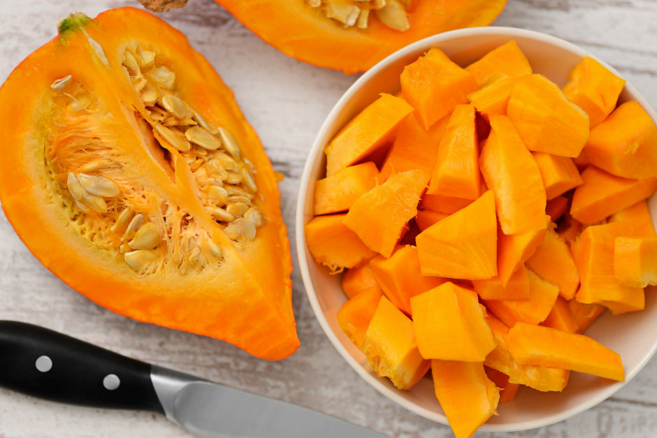
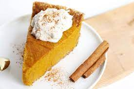

Yapılan çeşitli çalışmalar sonucunda arkeologlar, bal kabağının 7500 yıl önce Orta Amerika’da ortaya çıktığını söylüyor. Bu topraklardaki çalışmalar sonucunda ilk evcil bal kabağı tohumları, Meksika'nın Oaxaca yaylalarında keşfediliyor. Bal kabağı sarıdan turuncuya çalan rengi ve sert kabuğuyla yuvarlak bir görünüme sahip. Bu leziz meyve, Kuzey Amerika'daki insanların tüketimi için yetiştirilen ilk besinlerden. Bu meyvenin sıklıkla kullanılması kabuklarının sert olmasına ve etlerinin bol olmasına dayanıyor. Sert kabuklu bu meyveler özellikle soğuk havalarda kolaylıkla muhafaza edilip, kontrol edilebiliyor. Böylece kıtlık gibi dönemlerde rahatlıkla tüketiliyor. Bu meyveyle hazırlanan yemekler Amerika’da Şükran Günü'nün de vazgeçilmez geleneksel yemekleri arasına giriyor. Bu kabakla yapılan yüzlerce tarif var.

Veganlık, hayvan ürünleri yerine bitkisel kaynaklı besinleri tercih eden bir yaşam tarzıdır. Bu seçim, sağlığı desteklerken çevreye ve hayvan haklarına duyarlı bir tutumu temsil eder. Sebzeler, meyveler, baklagiller ve tahıllar gibi besinlerle hazırlanan lezzetli yemekler, vegan yaşam tarzını desteklerken besleyici ve çeşitli alternatifler sunar.
Kültürümüzde Bal kabağı çok sık kullanılmamasına rağmen son dönemlerde artan bir modası var isterseniz bu güzel lezzeti bir de vegan olarak hazırlanışını kontrol edelim.
Tarif: Vegan Bal Kabağı Turtası

Önce tabanı hazırlamalısın. Bunun için unu, şekeri, sirkeyi ve 1/2 çay kaşığı tuzu bir mutfak robotunda karıştır. Hindistan cevizi yağını kaşık kaşık ekle. 4 çorba kaşığı buzlu suyu da karışıma ekle ve pürüzsüz olana kadar karıştırmaya devam et. Bir parça hamuru sıkıp şeklini koruyacak kadar kıvamlanmış mı diye kontrol et. Karışım katı olursa, 1 ila 2 çorba kaşığı buzlu su daha ilave et. Hamuru streç filmle kapla. Yaklaşık 1 buçuk santim kalınlığında açıp en az bir saat buzdolabında beklet.
Kullanmaya hazır olunca önce hamurun biraz yumuşamasına izin ver. Hamuru hafifçe unlanmış bir yüzeyde bir yuvarlak şekilde aç. Turta kabına al ve kenarı istediğin gibi kıvır. 30 dakika dinlendir. Fırını 180 derece ısıt ve hazırladığın turta altını kenarları hafifçe altın rengi olana kadar, 20 ila 25 dakika arasında pişir.
Turtanın altı pişerken kabak pürelerini, tofu, şeker, mısır nişastası, tarçın, Hindistan cevizi, vanilya ve 1/4 çay kaşığı tuzu bir mutfak robotunda tamamen pürüzsüz hale getir. Dolguyu turta altına dök ve sertleşene kadar pişir. Yaklaşık olarak 45 dakikada hazır olur. Pişen turtanı fırından alıp en az 2 saat dinlendir.